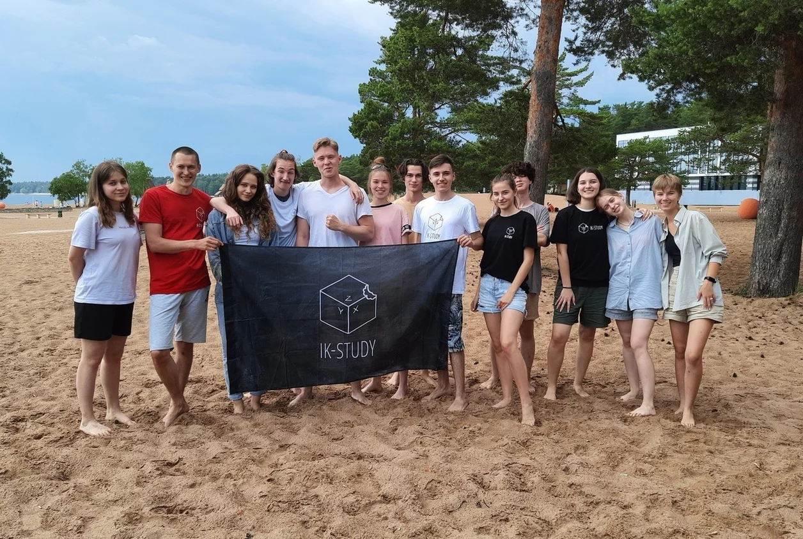
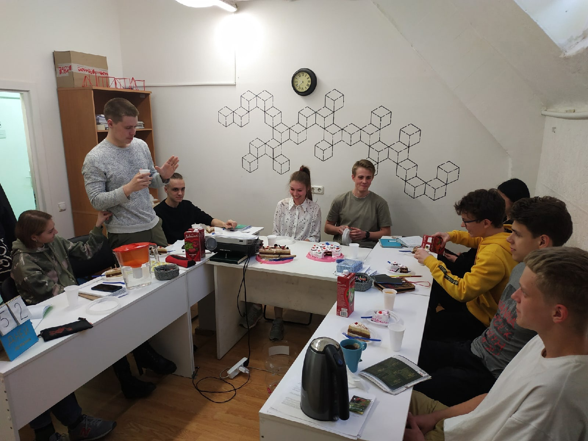

О нас
SkillBridge - это инновационная платформа, которая соединяет учащихся с опытными преподавателями и репетиторами. Наша миссия – помочь каждому найти идеального наставника для эффективного освоения новых навыков, подготовки к экзаменам или углубленного изучения интересующих тем.
С SkillBridge вы получаете доступ к широкому выбору профессионалов в различных областях: от математики и языков до программирования и искусства. Каждый репетитор на платформе тщательно отбирается, чтобы гарантировать высокое качество обучения и индивидуальный подход.
SkillBridge – это ваш надежный мост к новым знаниям и успеху в учебе!

- 
-

- 